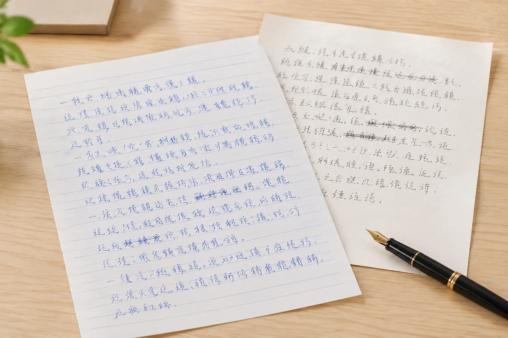

苏州旧书信的信纸横线，会影响模仿笔迹中的行距判断吗
横线提供了排布参照，也限制了文字空间。看见行距一致时，先确认它是否恰好沿着纸上的格线形成。

格线与文字一起保留
苏州模仿笔迹参考如果写在横线纸上，完整图像能显示字与线的相对位置。去掉背景横线可能改善阅读外观，却也丢失排布条件。观察时先区分格线约束和自由安排，不把一张横线信纸与空白纸的行距直接当成完全相同条件下的表现。不同信纸的横线间距未必相同。即使屏幕上看着接近，也不能先把格线调成等宽，再据此判断文字实际大小是否一致。
局部不代替整页
模仿签名、模仿签字参考中，姓名可能跨在线条上，也可能位于留白处。局部图应能回到原页面，避免把印刷线误读成连接笔画。不同副本中的横线浓淡可能变化，记录时说明来源，不通过擦线处理来宣称恢复了原来的每一处墨迹。
对比条件注明即可
笔迹鉴定资料的纸张格式、复制方式和形成背景，能核实就记清，未知项不猜。相同页的彩色、黑白和去底色版本仍属于同一次书写，不能算成多份样本。补到更完整材料后更新对应关系，保留旧目录，后续查阅才不容易混淆。